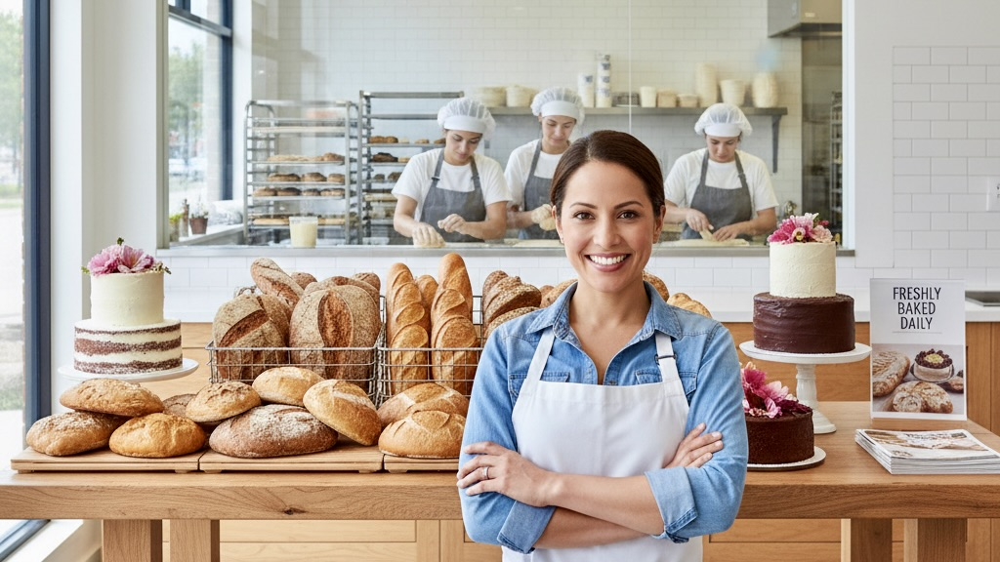
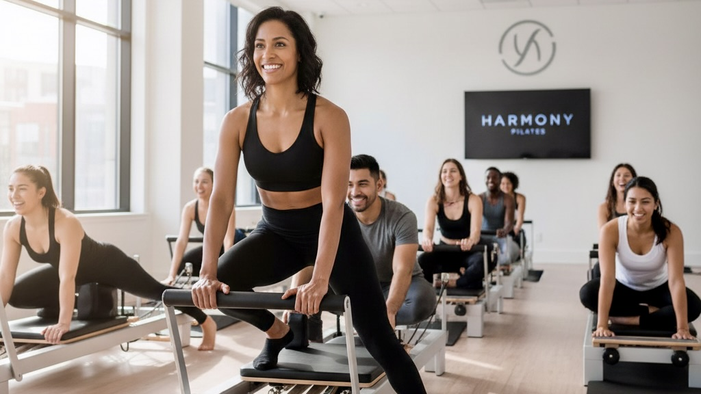
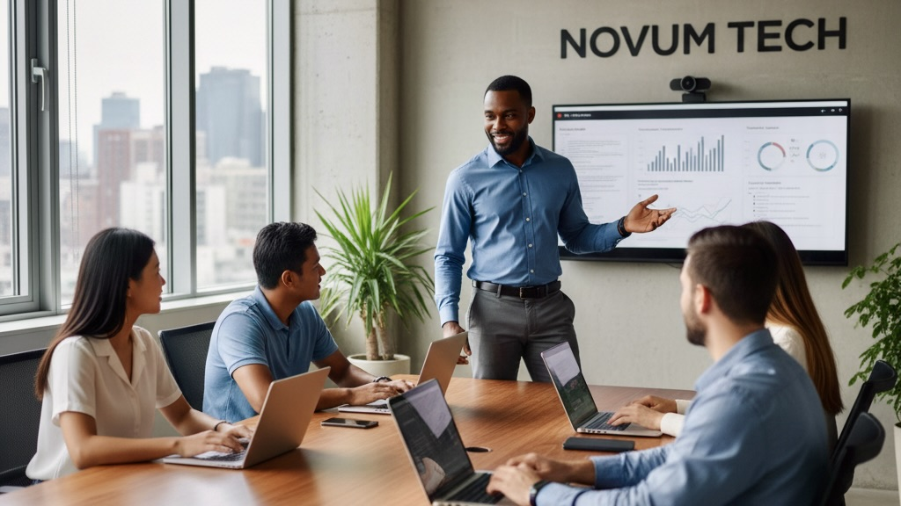

Client Success Stories
See how small businesses secured funding with our grant research and writing services.

Bakery Expansion Success
A family-owned bakery in Atlanta secured $10,000 in grants to buy equipment and expand staff.

Fitness Studio Growth
A minority-owned fitness studio received $15,000 in grant funding to launch new wellness programs.

Tech Startup Boost
A Black-owned software startup secured $25,000 in grant funding for product development and hiring.